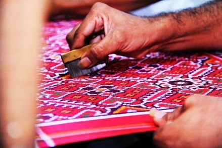
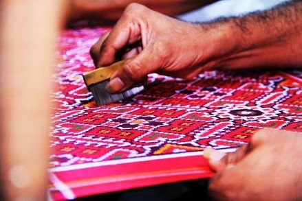
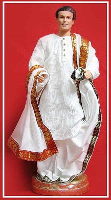
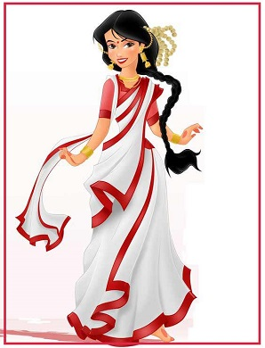

| Home Literature Theatre & Cinema Music & Dance Festivals Cuisine Architecture Handicrafts |
The State of West Bengal is known for its great heritage of Artistic works and handicrafts. Generally, the technique to make handicrafts items has been confined in the family or in a particular community and it passes from generation to generation. especially women of the household have been engaged in making of various handicrafts for extra income for the family. In the early age, people used to interchange their handmade items for necessity. But in a change of era handmade items has been used not only for house hold purposes, but also for home decorations. Now in resent time Bengal handicrafts has its worldwide market for their richness in art and crafts, genuinely and price. Due to the reign of many different rulers in the past, arts and crafts in West Bengal underwent many changes giving an artistic diversity today in the forms of traditional handicrafts, terracotta, painting and carving, dance, music except of natural beauty and glorious past the state has the strong hold of art and architecture which made the state so unique. Clay art has an indigenous history in West Bengal. Ghurni of Nadia district is very popular for making the clay idols. West Bengal has an ancient heritage of dolls. Dolls have been customarily crafted by women from the potter communities. Dolls made of soft clay and fired-clay are available all over West Bengal. Each of these dolls are made differently. Terracotta dolls of Panchmura, Hingul and Tusu dolls of Bishnupur, Jo dolls of Midnapore, Kanthalia dolls of Murshidabad, Sasthi dolls of Coonoor, Manasha pot of Dakshindari and Shiva head of Nabadwip are very famous. Kantha Stitch is one of the most popular handicrafts of Santiniketan in the Birbhum district of West Bengal, India.
 
Dokra art is the most interesting and creative art of West Bengal. The Dokras are now dispersed over the western part of West Bengal in four districts namely Bankura, Purulia, Midnapore and Burdwan and are mainly concentrated in Bankura and partly in Purulia. The Dokra artisans of Bankura make various kinds of images and figurines of gods and goddesses, birds and animals, like Lakshmi, Lakshmi-Narayan, Shiva-Parvati flanked by Ganesh and Kartik, elephants, horses, owls, peacocks etc. Wooden art is a very old tradition of West Bengal. Wooden protima or idol is seen in Indian Museum. The art-making wooden dolls have been an age-old practice in West Bengal and Natungram is one of them. Natungram, a village of West Bengal makes wooden dolls like Gouranga, Krishna, Bor-Bou, Gour-Nitai, owl etc. Bamboo crafts are a very old and indigenous tradition in West Bengal. Different shapes and patterns of baskets are made using local traditions and techniques. In West Bengal, a tray-like bamboo basket is traditional. West Bengal is believed to be the motherland of handicraft artistic works in India and in every corner of the State is establishing of this fact. Bengal Handicrafts now has got the world wide recognition. So, handicrafts are not only has the artistic value but also the monetary value as well.
West Bengal is a state of extremely rich culture and history. Every corner of the streets of West Bengal has a story to share. Not only has this land given us some of the most renowned names in the country, it also happens to be a place of strong civilisation.
The costume of West Bengal is known for its distinct features and is perhaps the most popular example of our culture.
 
Men’s Dresses:
The traditional dress of Bengali men is dhoti. The top or kurta that is paired with dhoti is called panjabi.
In earlier times and especially during British Era, the dhotis were synonymous with white color. However, these days, to add a twist to the attire the dhoti is made available in number of attractive colors.
The panjabis or the kurtas are usually made of silk or cotton and run up to knee length.
The lungi happens to be another variation of the men’s costume. However that is more of an informal casual indoor wear.
Women’s Dresses:
Saree is the signature traditional attire for the women in West Bengal. The saree captures the very essence of the culturally infused state West Bengal is. Even the saree draping style of Bengali women is quite distinct and has become more of a distinguishing feature now. Sarees are primarily woven in cotton and silk which have been named chiefly after their weaving techniques. The traditional weavers or Tantis of West Bengal are reputed worldwide because of the quality of fabric spun and their elaborate thread work. In various districts of Bengal like Murshidabad, Malda, Nadia, Birbhum, Bankura and Hooghly, different varieties of Sarees are woven with supreme efficiency and dedication.